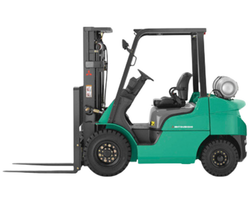
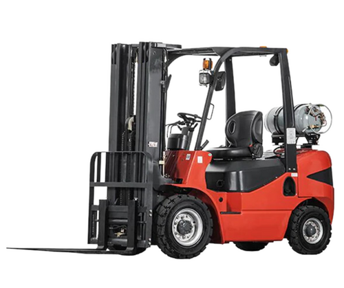
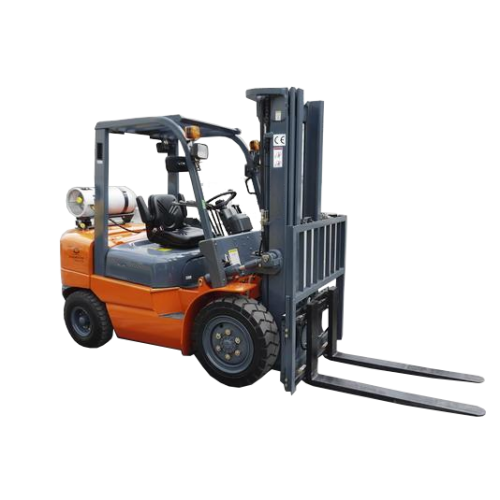
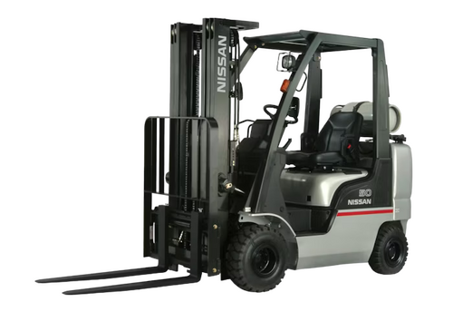
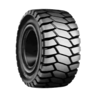
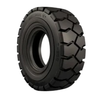
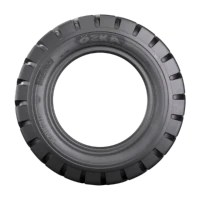
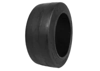

Contamos con una amplia gama de equipos para manejo de materiales, que se adaptan a las necesidades de cada cliente y a cada aplicación. Podemos recomendar el más adecuado conforme a los requisitos y características, capacidad de elevación o tecnología, ya sea de Motor eléctrico de inducción o con motor de combustión (CI).
Productos
Pallet Jack Manual

C-G Series 8,000 - 12,000 lb Capacity
C-G Series 8,000 - 12,000 lb Capacity
C-G Series 8,000 - 12,000 lb Capacity
C-G Series 8,000 - 12,000 lb Capacity
funciona únicamente con la fuerza del operador. Cuando se transportan cargas más pesadas se incrementa el esfuerzo del operador, lo que lo hace más adecuado para tiradas cortas y trabajos rápidos. Es una opción económica cuyo tamaño lo hace muy versátil y ergonómico sin necesidad de añadir cableado eléctrico o mantenimiento de la batería. Es ideal para las industrias de venta al por menor, almacenamiento en frío y almacenamiento general.
Pallet Jack Eléctricos
C-G Series 8,000 - 12,000 lb Capacity
C-G Series 8,000 - 12,000 lb Capacity
C-G Series 8,000 - 12,000 lb Capacity

C-G Series 8,000 - 12,000 lb Capacity
Reduce la tensión del operador, haciéndolo perfecto para distancias medias. Los frenos eléctricos son una ventaja adicional cuando se trabaja en una pendiente en la que se necesita reducir la velocidad o detenerse. La transpaleta eléctrica también tiene un sistema anti-retroceso que te ayudará a mantener tu carga en su lugar cuando pases de frenar a moverte. No encontrarás eso en una manual. La gran ventaja de estas entra en juego cuando maniobras sobre las placas del muelle, rampas y rejillas.
Montacargas de gas o diesel




Los montacargas de combustión a gas o diésel están diseñados para soportar cargas pesadas, ideales para transportar materiales en industrias, cadenas de sumistros, así como bodegas y almacenes que llevan a cabo transporte de grandes mercancías.
Ventajas de un montacargas que use GLP son:
- Bajo costo de adquisición
- Uso en interiores y exteriores
- Pocas emisiones de gas contaminante
- Menor costo de mantenimiento
- Rápida recarga de combustible
Montacargas eléctricos
Este tipo de montacargas se utiliza en una amplia variedad de aplicaciones, que incluyen fabricación, almacenamiento, distribución, bebidas y venta minorista. Las diversas opciones del equipo sirven para trabajos interiores y exteriores. Siendo así, podrás aumentar tu eficiencia y realizar el trabajo.
Los montacargas eléctricos funcionan con una batería que sirve como contrapeso para estabilizar el equipo mientras está en uso y como fuente de energía. Además, la batería ayuda a proteger el medio ambiente con un funcionamiento silencioso y de bajas emisiones y capacidades recargables.
Estas características no solo hacen que este montacargas sea atractivo para la operación, sino que también es ideal para maximizar la productividad con su velocidad, potencia y maniobrabilidad.
Ventajas de un montacarga eléctrico
- Es mucho más seguro y protege el medio ambiente
- Bajo costo de mantenimieno y bajo costo de operación
- Tiene un fácil acceso a la batería y la bomba hidráulica
- Altura de mástil de hasta 4 metros
Llantas para montacargas
Llantas Cushion
Son hechas de caucho sólido moldeado en una banda de acero, pueden ser de tracción o lisas. Este es un tipo de llanta muy duradera y se usa comúnmente en trabajos en interiores o exteriores en superficies lisas.
Llantas Neumaticas
Parecidas a las llantas convencionales de autos, están hechas de caucho y cuentan con cámara de aire. Son utilizadas en gran variedad de industrias debido a que cuentan con gran capacidad de carga y son ideales para todo tipo de suelos, pero es necesario cuidar que el área esté libre de objetos afilados.
Llantas Solidas
También llamadas resilentes, se pueden encontrar de tracción o lisas y están hechos de capas de caucho y hule, son muy duraderas debido a que no se pinchan o desinflan, por lo que se ahorra en costos de mantenimiento. Ideales para áreas en las hay presencia de objetos afilados como centros de reciclaje, madererías, siderurgia, etc.
Recomendaciones
Las aplicaciones recomendadas para cada tipo de llanta para montacargas No olvides que, al comprar las llantas para tu equipo, es importante considerar las recomendaciones del fabricante, tomar en cuenta el entorno en el que trabaja tu montacargas y el tipo de carga que transporta para asegurarte que estás seleccionado la llanta correcta. Aquí podrás ver algunas recomendaciones por aplicación:
- Transporte en interiores: en los que no haya residuos o materiales sueltos en el piso, una opción adecuada son las llantas neumáticas por brindar mayor maniobra y mejor tracción.
- Transporte en exteriores y terreno difícil: son ideales las llantas neumáticas o sólidas por ofrecen mejor tracción y estabilidad en terrenos irregulares.
- Almacenes: en estos entornos generalmente se usan montacargas order picker, que utilizan llantas de poliuretano que contribuyen a mejorar la vida útil de la batería y proporcionar estabilidad.
- Ambientes fríos o húmedos: para este tipo de ambientes se suelen usar llantas de poliuretano especiales que brindan mayor capacidad de frenado.
- Ambientes especiales: para aplicaciones delicadas, como la industria de alimentos, papel o impresión, el uso de llantas con propiedad no manchante puede ser la opción, ya que los otros tipos crean una fina partícula de polvo durante el uso que puede causar problemas de contaminación.
Estas son solo algunas de las prácticas más comunes, sin embargo, los estándares pueden cambiar según el entorno de trabajo específico y la aplicación. Lo ideal es acercarte a un especialista para confirmar que la llanta que seleccionaste es la ideal para tu tipo de montacargas.
Contamos con los siguientes tipos de llantas

LLANTA 600-9 4.0
LLANTA 6.50-10 5.0

LLANTA 700-12 5.0
LLANTA 7.50-15 5.5

LLANTA 5.00-8 3.0

LLANTA 8.25-15
LLANTA 8.15-15

LLANTA 18x6x12 1/8
LLANTA 14x4 1/2x8
LLANTA 15x5x11 1/4
LLANTA 16 1/4x5x11 1/4
LLANTA 16 1/4x6x11 1/4